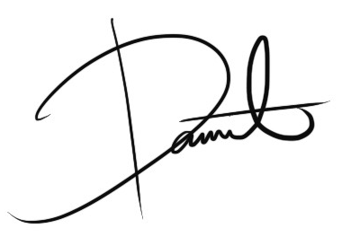

I’m a UX designer based in Washington focusing on creating elegant and accessible digital experiences for everyone. I’m currently studying at Western Washington University, where I am pursuing a degree in Computer Science and a minor in Mathematics and UX Design respectively. I’m set to graduate Summer of 2021.
When I’m not designing or coding, I enjoy a variety of hobbies ranging from the usual (playing guitar, writing, learning languages, lifting) to the more unusual (building keyboards, tuning knives). Feel free to ask me about any of ‘em :)
Ever since I was a kid, I’ve always loved building things. As I grew up, those things turned from Legos to websites to digital experiences. I believe that I’m happiest when I’m creating.
Let’s build something cool together!
View Resume 